Pin down the question before you analyze anything
A trial exists to answer a question: what does this treatment do? But that is vaguer than it sounds. Before you analyze anything, you have to pin down exactly which effect, in which people, on which outcome, accounting for which real-world complications, summarized in which way. Skip this, and two statisticians can analyze the same dataset and report different "treatment effects," each correct for a different unstated question.
The fix is to write down the effect you intend to estimate before the trial — precisely enough that the analysis method follows from it, not the other way around. Call this precisely defined effect the Target Effect.
The five parts of a Target Effect
A Target Effect is fully specified only when all five of these are nailed down. Change any one of the five and you have changed the question.
- Treatments: which treatment(s) and comparator(s), and the regimens around them.
- People: the patient population the question is about.
- Outcome: the specific measurement that captures the clinical question (the endpoint).
- Disruption handling: how you account for events that occur after treatment starts and muddy the outcome (see §4). The most neglected part, and the heart of this document.
- Group summary: how individual outcomes are combined into one number comparing treatments (difference in means, odds ratio, hazard ratio, etc.).
Disruptions vs. simply-missing data
A Disruption is an event that happens after treatment starts and either changes the meaning of the outcome or makes it hard to interpret — starting a rescue medication, stopping the study drug, switching arms, or dying before the outcome is assessed. A Disruption is not the same as missing data, and conflating the two is the most common error here.
A question-definition problem
Something happened to the treatment or to the meaning of the outcome. The outcome you want is still conceptually defined — the only question is how the effect should treat the event.
An estimation problem
The plain absence of a value you wanted, where that value stays perfectly well defined — e.g., a patient moves away. Nothing about the question changed; you just do not have the number. Handled with imputation and similar tools.
The two stack: a Disruption can later produce missing data. Handle them as separate steps — first decide how the Target Effect treats the Disruption, then deal with any data that ends up missing.
The five ways to handle a Disruption
Each strategy is a different answer to "given that this event can happen, what effect do we actually want?" None is universally right; the clinical question decides. The pictures below are the archetypes — reusable across different events, because the picture goes with the strategy, not the event.
(a) Count Regardless — aka Treatment Policy
Use the outcome value no matter what — whether or not the Disruption happened. The event is treated as part of real life and ignored in defining the effect. Answers the pragmatic question: what happens when you start this treatment, knowing some patients will stop, switch, or supplement? Note that this strategy requires that you actually collect the outcome after the Disruption; it cannot be used when the Disruption makes the outcome impossible to obtain (e.g., death, for a non-survival outcome).
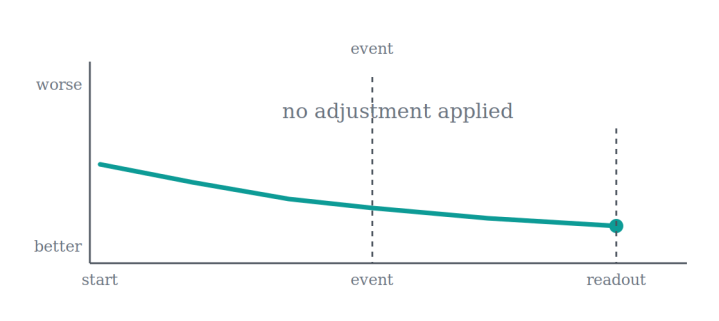
(b) Bake-In — aka Composite Variable
Make the Disruption part of the outcome itself. Rather than measuring the clinical value alone, you define a combined endpoint in which experiencing the event counts as a result — usually a failure. You are not estimating what the value would have been; you are declaring that the event itself is an outcome. The high value is a definition, not an estimate — which is why the archetype is a clean, hard arrow to a fixed value.
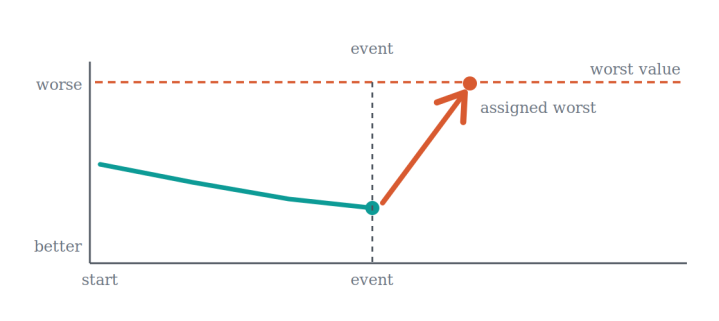
(c) What-If — aka Hypothetical
Target the value the outcome would have taken in an imagined world where the Disruption never occurred. You specify the hypothetical condition (e.g., "rescue had not been available"), then estimate what would have happened. Unlike Bake-In, you are not scoring the event — you are reconstructing a counterfactual value, which carries uncertainty. A single deterministic reconstruction looks like the first picture; multiple imputation looks like the second — the scatter of draws is the visual signature of "estimated, not declared."
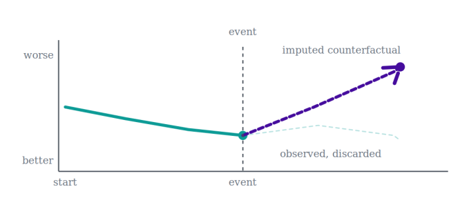
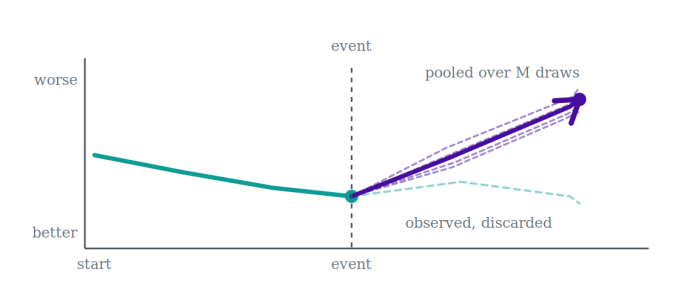
(d) Until-Disruption — aka While On Treatment
Define the outcome only over the period before the Disruption. The question is the effect while the patient is actually on treatment, accepting that different patients contribute different lengths of time. You do not recover or imagine the post-event period — it is simply outside the question that the estimand is answering. Natural for cumulative or longitudinal outcomes, not for a single fixed-timepoint snapshot.
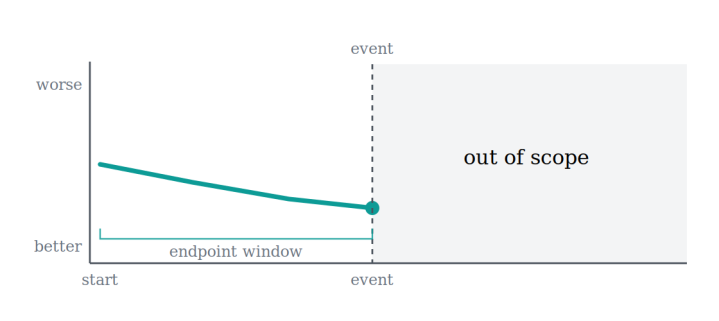
(e) Same-Type Subgroup — aka Principal Stratum
Narrow the question to a specific type of patient: those who would (or would not) experience the Disruption regardless of which treatment they were assigned. Because that membership is a fixed trait independent of the assignment actually received, comparing treatments within that type is a fair, like-with-like comparison — unlike naively subsetting to whoever actually avoided the event, which breaks randomization. The catch: membership is latent (each patient is assigned once), so identification rests on assumptions plus sensitivity analysis. This is the one strategy that is not about a trajectory over time — so its picture deliberately breaks format.
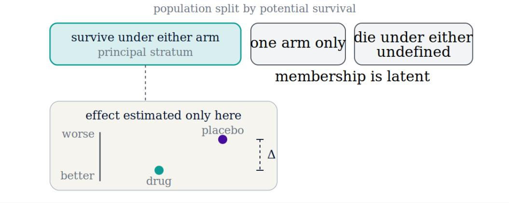
Same event, different strategy
The same Disruption appears under several strategies — only the strategy choice changes. The implementation tag means: SINGLE = one procedure; PICK ONE = true alternatives; ALL STEPS = a sequence run in order. (Study withdrawal is deliberately absent — it is missing data, not a Disruption.)
| Disruption | Strategy & why | How it is implemented | Figure |
|---|---|---|---|
| Rescue medication | Count RegardlessReal-world effect of starting the drug; rescue is part of the lived regimen. | Single Follow on schedule; use the post-rescue value as observed. |
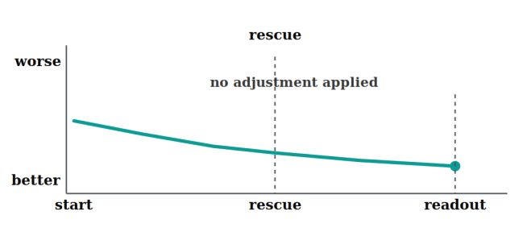 |
| Rescue medication | Bake-InNeeding rescue is itself failure, so it goes inside the endpoint. | Pick one — by endpoint type
|
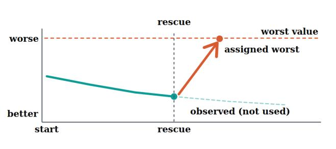 |
| Rescue medication | What-IfEffect in a world where rescue was not available. | All steps
|
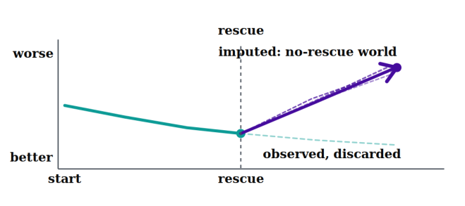 |
| Rescue medication | Until-DisruptionOnly the response over the window before rescue matters. | Pick one — by endpoint shape
|
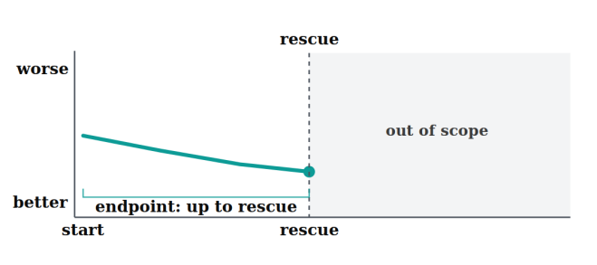 |
| Discontinuation (AE) | Count RegardlessEffect of the regimen, accepting some stop for tolerability. | Single Continue assessments after the drug stops; use final outcomes as observed. |
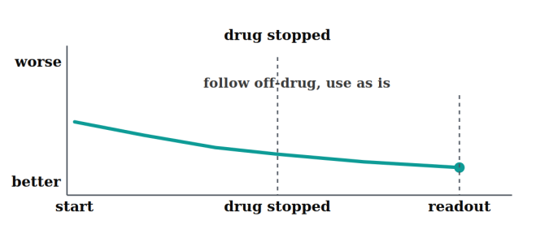 |
| Discontinuation (AE) | What-IfEffect had the patient been able to stay on drug. | All steps
|
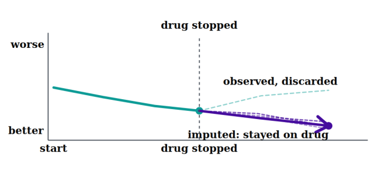 |
| Discontinuation (AE) | Until-DisruptionBenefit only while patients tolerate and stay on drug. | Pick one — by endpoint shape
|
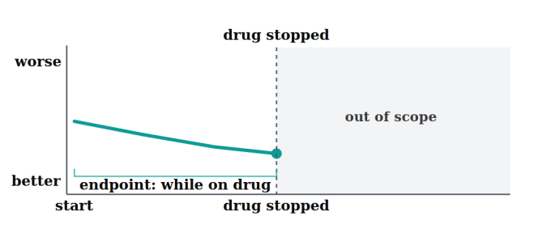 |
| Death before assessment | Bake-InDeath is the worst result; bake it into the endpoint. | Pick one — by endpoint type
|
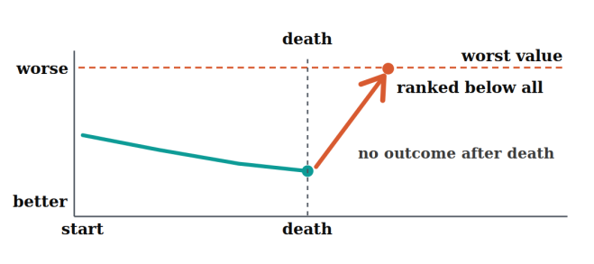 |
| Death before assessment | Same-Type SubgroupEffect among patients who would survive under either arm — the only group for whom the outcome is defined. | All steps
|
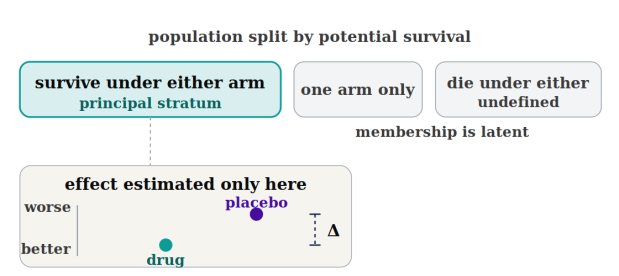 |
| Death before assessment | Until-DisruptionSymptom benefit during the time alive and on drug. | Single Define the endpoint over the period before death (e.g., mean score while alive). |
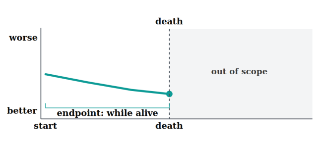 |
| Death before assessment | Count Regardless — Not Applicable | N/A No value exists after death, so this strategy cannot actually be used here. |
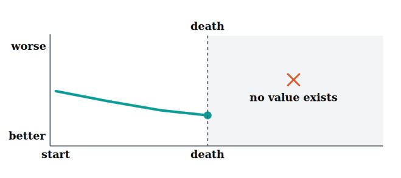 |
| Switch to other drug | Count RegardlessReal-world effect of the initial assignment, switching included. | Single Keep ITT; use final outcomes regardless of switch. |
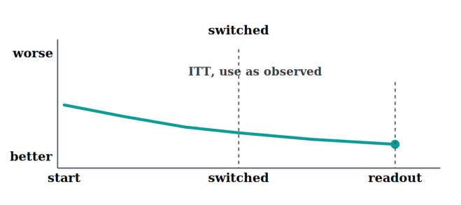 |
| Switch to other drug | What-IfEffect had switching not been possible. | All steps
|
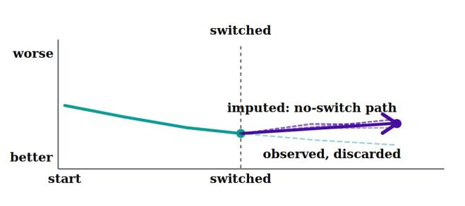 |
The workflow
The pieces are planned in order, before data arrive:
Perform Stress Tests and Side Analyses in addition to the primary analysis. A Stress Test keeps the same Target Effect and asks whether the conclusion holds if the untestable assumptions are wrong in plausible ways. A Side Analysis is broader or exploratory — often a different Target Effect — and is not a robustness check. All of it belongs in the protocol and SAP up front.
Same archetype, rendered for each event
The table above uses one archetype picture per strategy. Here are the same pictures rendered for each specific event — note how the archetype stays constant while the event label and a few event-specific details change. That constancy is the point: the picture goes with the strategy, not the event.
Rescue medication
Treatment discontinuation (AE)
Death before assessment
Switch to other drug
New term → ICH E9(R1) term
The plain-language names used throughout this document map directly onto the official guideline vocabulary.
| This document | ICH E9(R1) |
|---|---|
| Target Effect | Estimand |
| Disruption | Intercurrent event |
| Group summary | Population-level summary |
| Count Regardless | Treatment policy strategy |
| Bake-In | Composite variable strategy |
| What-If | Hypothetical strategy |
| Same-Type Subgroup | Principal stratum strategy |
| Until-Disruption | While on treatment strategy |
| Stress Test | Sensitivity analysis |
| Side Analysis | Supplementary analysis |
Anatomy of a real estimand
An example definition of an estimand, with comments and critiques — what to keep, what to reword, and the critical errors to avoid.


Barbara Elashoff, MS
CEO & Co-founder, BlackCat Bio · Former FDA statistical reviewer